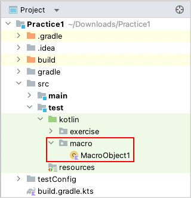
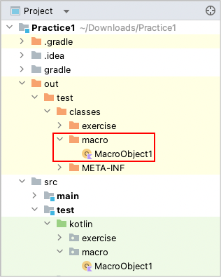

Macro
It’s very important to reuse test code. You can register routine work as macro.
Creating macro object/function
- Create an object class in any place under
src/test/kotlin. For example, createmacrodirectory, then createMacroObject1.
 - Implement code as follows.
- Put @MacroObject annotation on the object class.
- Inherit from TestDrive interface.
- Create a function and put @Macro annotation on it.
package macro
import shirates.core.driver.TestDrive
import shirates.core.driver.commandextension.tap
import shirates.core.macro.Macro
import shirates.core.macro.MacroObject
@MacroObject
object MacroObject1 : TestDrive {
@Macro("[Network preferences Screen]")
fun internetScreen() {
it.tap("Network & internet")
.tap("Internet")
.tap("Network preferences")
}
}
- Build the project. The class file of the macro is output in
outdirectory.

Calling macro function
- Create class
Macro1underkotlin/exercise. - Implement test code as follows.
package exercise
import org.junit.jupiter.api.Order
import org.junit.jupiter.api.Test
import shirates.core.configuration.Testrun
import shirates.core.driver.commandextension.exist
import shirates.core.driver.commandextension.macro
import shirates.core.testcode.UITest
@Testrun("testConfig/android/androidSettings/testrun.properties")
class Macro1 : UITest() {
@Test
@Order(10)
fun macro1() {
scenario {
case(1) {
action {
it.macro("[Network preferences Screen]")
}.expectation {
it.exist("Install certificates")
}
}
}
}
}
Run the test code. You can see a log line on console like this.
[info] () Registering macro. (macro.MacroObject1)